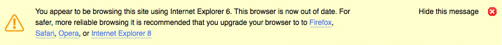

Internet Explorer 6 was released on August 27, 2001. Almost nine years later the web has moved on but Internet Explorer is still widely used, especially in corporate environments. It is time that users were encouraged to upgrade from Internet Explorer.

To add IE6 Notice to your site just add this code before the closing body tag of your HTML.
<!--[if IE 6]>
<script type="text/javascript" src="http://shapeshed.github.com/ie6-notice/ie6notice-1.0.0.min.js"></script>
<![endif]-->
This code generates the message for IE6 users.
Don't like the style? You can override the styles of the notice with your own custom CSS. The following elements can be styled:
Bug reporting and issue tracking is handled via Lighthouse
The source code can be downloaded from the Github repository.
IE6 Notice was created by George Ornbo, a freelance web developer from London, UK. Follow me on Twitter if you like.
The project is licensed under an Apache License 2.0